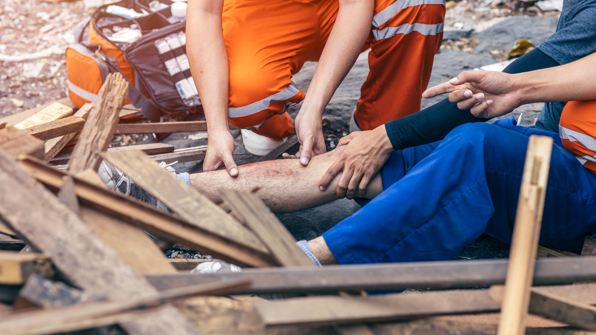
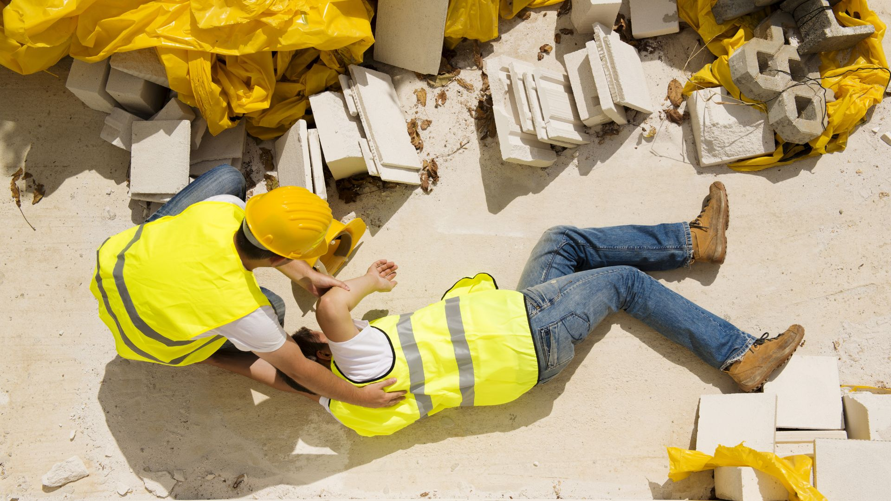

Construction Accidents in Huntsville, AL: Common Injuries and Legal Options
Construction sites are some of the busiest and most dangerous workplaces in Alabama. Heavy machinery, elevated work areas, electrical systems, and fast-moving schedules can all create serious safety risks. When something goes wrong, the consequences can be life-changing for workers and their families. If you have been hurt on a job site, searching for a personal injury lawyer is often one of the first steps toward understanding your legal rights and recovery options.
At The Lackey Law Firm, we have spent decades helping injured individuals throughout North Alabama. Whether someone suffered injuries from a fall, defective equipment, electrocution, or another construction-related incident, working with an experienced construction accident attorney can make a major difference during the claims process. A knowledgeable lawyer that residents trust can help investigate the accident, identify responsible parties, and pursue compensation for medical expenses, lost wages, and other damages.
Construction injuries can affect every part of a person’s life. From physical pain to financial stress, injured workers often face a difficult road ahead. Understanding the most common construction injuries and the legal options available can help victims make informed decisions about their future.

Why Construction Accidents Are So Common in Huntsville
Huntsville continues to experience rapid growth, with new residential communities, commercial buildings, road projects, and industrial developments appearing throughout the area. While construction growth supports the local economy, it also increases the number of workers exposed to hazardous job site conditions.
Construction crews regularly work around:
- Scaffolding and elevated platforms
- Power tools and heavy equipment
- Electrical wiring and utilities
- Hazardous materials
- Moving vehicles and machinery
Tight deadlines and changing work conditions
Even when safety procedures are in place, accidents can still happen because of negligence, poor training, equipment failures, or unsafe work environments. In many cases, victims may have legal claims beyond workers’ compensation.
An experienced personal injury lawyer can review the details of a construction accident and determine whether another party may be legally responsible. This is especially important in situations involving contractors, subcontractors, property owners, or defective equipment manufacturers.
Common Causes of Construction Accidents
Construction accidents happen in many different ways. Some incidents involve a single act of negligence, while others result from multiple safety failures on a work site.
Falls From Heights
Falls remain one of the leading causes of serious construction injuries nationwide. Workers often perform tasks on ladders, scaffolding, rooftops, or elevated platforms. Missing guardrails, unstable surfaces, and defective equipment can all contribute to devastating falls.
These accidents frequently result in:
- Broken bones
- Head injuries
- Spinal cord injuries
- Internal injuries
Permanent disabilities
A construction accident lawyer may investigate whether proper fall protection equipment was provided and whether OSHA safety standards were followed.
Falling Objects
Construction sites frequently involve overhead work. Tools, building materials, and debris can fall from elevated areas and strike workers below. Even with hard hats, falling object accidents can cause severe injuries.
Common injuries include traumatic brain injuries, neck injuries, and fractures.
Electrocution Accidents
Workers may come into contact with exposed wires, faulty electrical systems, or overhead power lines. Electrical injuries can lead to severe burns, nerve damage, cardiac complications, and fatalities.
A skilled personal injury attorney can examine whether contractors or site managers failed to follow proper electrical safety procedures.
Heavy Equipment Accidents
Bulldozers, forklifts, cranes, excavators, and other machinery are essential on construction sites, but they can also be extremely dangerous. Equipment accidents may happen because of mechanical failures, poor maintenance, operator negligence, or inadequate training.
Victims often suffer crushing injuries, amputations, and catastrophic trauma.
Slip and Fall Incidents
Uneven surfaces, loose debris, wet conditions, and poorly marked hazards create dangerous walking conditions on construction sites. While some slips may appear minor at first, they can cause serious back injuries, knee damage, and head trauma.
Exposure to Hazardous Substances
Construction workers may encounter toxic chemicals, asbestos, silica dust, and other harmful substances. Long-term exposure can lead to chronic respiratory illnesses and other serious health complications.
An experienced construction site accident attorney can help determine whether employers or third parties failed to provide adequate safety protections.
Common Construction Accident Injuries
Construction accidents often lead to severe injuries that require extensive medical care and rehabilitation. Some victims may never fully recover from the physical or emotional effects of the accident.
Traumatic Brain Injuries
Head injuries are among the most serious outcomes of construction accidents. Falling objects, slips, and falls from heights can all cause traumatic brain injuries. Victims may experience memory problems, headaches, cognitive issues, and long-term disabilities.
Spinal Cord Injuries
Back and spinal injuries can permanently affect mobility and independence. Some victims suffer partial or complete paralysis after a serious construction accident.
Broken Bones and Fractures
Falls and equipment accidents commonly cause fractures to the arms, legs, ribs, hips, and other parts of the body. Recovery may require surgery, physical therapy, and long periods away from work.
Burns
Electrical accidents, explosions, and chemical exposure can lead to severe burn injuries. Serious burns often require skin grafts, surgeries, and ongoing medical treatment.
Crush Injuries
Workers caught between heavy equipment or collapsing structures may suffer crush injuries that damage muscles, nerves, and internal organs.
Amputations
Machinery accidents can result in the loss of fingers, hands, arms, or legs. Amputations frequently change a victim’s ability to work and perform daily activities.
Emotional Trauma
Construction accidents can also have emotional and psychological effects. Anxiety, depression, and post-traumatic stress disorder are common after serious workplace injuries.
A dedicated Huntsville personal injury attorney can help victims pursue compensation for both physical and emotional damages related to the accident.
Legal Options After a Construction Accident
Many injured workers assume workers’ compensation is their only option after a construction accident. While workers’ compensation may provide important benefits, some victims may also have third-party personal injury claims.
Workers’ Compensation Benefits
According to Alabama workers’ compensation laws, injured employees may qualify for medical and wage-related benefits after a workplace injury.
Workers’ compensation may cover:
- Medical treatment
- Partial lost wages
- Rehabilitation costs
Disability benefits
However, workers’ compensation typically does not provide compensation for pain and suffering.
Third-Party Injury Claims
In some situations, another party besides the employer may be responsible for the accident. Third-party claims may involve:
- General contractors
- Subcontractors
- Equipment manufacturers
- Property owners
Maintenance companies
Unlike workers’ compensation claims, personal injury law may allow injured victims to pursue compensation for pain and suffering, emotional distress, and the full extent of lost income related to the accident.
An experienced personal injury lawyer can evaluate all available legal options and determine the best path forward.
How a Construction Accident Attorney Can Help
Recovering from a serious injury is stressful enough without dealing with insurance companies and legal paperwork alone. Working with an experienced construction accident attorney allows victims to focus on healing while their legal team handles the claims process.
Investigating the Accident
A lawyer may gather evidence such as:
- Accident reports
- Witness statements
- Safety records
- Surveillance footage
- Medical documentation
Expert opinions
Thorough investigations can help identify the cause of the accident and determine liability.
Handling Insurance Companies
Insurance companies often try to minimize payouts or deny claims altogether. A skilled construction accident lawyercan negotiate with insurers and protect victims from unfair settlement tactics.
Calculating Damages
Many victims underestimate the long-term financial impact of a construction injury. Attorneys can help calculate current and future damages, including:
- Medical bills
- Lost wages
- Reduced earning capacity
- Rehabilitation expenses
- Pain and suffering
- Emotional distress
Representing Victims in Court
While many claims settle outside of court, some cases require litigation. An experienced personal injury attorney can present evidence, question witnesses, and advocate for the injured party throughout the legal process.

Can Non-Workers File Construction Accident Claims?
Not all construction accident victims are workers. Pedestrians, drivers, cyclists, and nearby residents can also suffer injuries because of unsafe construction zones.
For example, road construction projects may create dangerous conditions for cyclists and drivers. Poorly marked detours, debris, and negligent construction practices can lead to serious crashes.
A qualified personal injury lawyer can evaluate whether a construction company, contractor, or municipality may be responsible for the accident.
Compensation Available in Construction Accident Cases
Every construction accident case is unique, but injured victims may be eligible to recover several forms of compensation.
Medical Expenses
Compensation may include:
- Emergency room treatment
- Surgeries
- Hospital stays
- Medications
- Physical therapy
- Future medical care
Lost Income
Serious injuries may prevent victims from returning to work temporarily or permanently.
Pain and Suffering
Victims may recover damages related to physical pain, emotional distress, and reduced quality of life.
Disability and Long-Term Care
Catastrophic injuries may require ongoing medical support and accommodations.
Wrongful Death Damages
If a construction accident results in a fatality, surviving family members may have legal options through a wrongful death claim.
An experienced injury lawyer can explain what compensation may apply based on the specific circumstances of the case.
Local Experience Matters
Construction accident cases can involve complex Alabama laws, insurance policies, and liability issues. Working with a local attorney familiar with Huntsville courts and North Alabama construction practices can be an advantage.
For decades, we have represented injury victims across the region. The firm understands the challenges injured workers face after serious accidents and works to provide compassionate, aggressive legal representation.
Whether someone needs a construction accident attorney, or guidance from a Huntsville personal injury attorney, having experienced legal support can help during a difficult time.
Legal Support Backed by Decades of Experience
For decades, clients across Huntsville and North Alabama have turned to us for dependable legal guidance after serious injuries and unexpected accidents. Many former clients describe the firm as responsive, compassionate, and committed to keeping them informed throughout the legal process. Whether handling a construction accident claim or another personal injury matter, the team is known for providing personalized attention while aggressively advocating for injured individuals and their families. Clients often appreciate the firm’s honest communication, professionalism, and dedication during some of the most difficult moments in their lives.

Frequently Asked Questions About Construction Accidents
Construction accidents often leave victims with many questions about their rights, medical expenses, and legal options. Below are answers to some of the most common concerns injured workers and families may have after a serious construction site accident in Huntsville, Alabama.
1. What should I do immediately after a construction accident?
Your health and safety should come first. Seek medical attention right away, even if your injuries seem minor at first. Report the accident to your employer or supervisor as soon as possible and request a written incident report if available. If you can, document the accident scene by taking photos and gathering witness information. Speaking with a construction accident attorney early can also help protect important evidence and your legal rights.
2. Can I file a lawsuit after a construction accident in Alabama?
In some situations, yes. While workers’ compensation may cover certain benefits, injured workers may also have the right to pursue a third-party personal injury claim. These cases may involve negligent contractors, subcontractors, equipment manufacturers, or property owners. A skilled construction accident lawyer Huntsville, AL residents trust can review your case and determine whether additional legal action may be available.
3. What types of compensation are available after a construction injury?
Depending on the circumstances, injured victims may recover compensation for medical expenses, lost wages, rehabilitation costs, pain and suffering, emotional distress, and future medical care. Catastrophic injury cases may also involve compensation for long-term disability or reduced earning capacity. An experienced personal injury attorney can help calculate the full value of a claim.
4. How long do I have to file a construction accident claim?
Alabama law places time limits on personal injury claims, and missing deadlines could affect your ability to recover compensation. Because construction accident cases can involve multiple parties and complex investigations, it is important to speak with a personal injury lawyer as soon as possible after the accident.
5. What if a construction accident involved a bicycle or roadway hazard?
Construction zones can create dangerous conditions for cyclists and motorists. Poor signage, debris, uneven pavement, or unsafe traffic patterns may contribute to serious crashes. In these situations, injured cyclists may benefit from speaking with a bicycle accident lawyer, residents rely on for guidance after roadway-related injuries.
6. Do I need a lawyer for a workers’ compensation claim?
While you are not legally required to hire an attorney, legal representation can be valuable if your benefits are denied, delayed, or disputed. A knowledgeable injury lawyer can help protect your interests and ensure that insurance companies and responsible parties are held accountable.
7. Why should I hire a Huntsville personal injury attorney?
Construction accident cases often involve complex legal and insurance issues. Working with a local Huntsville personal injury attorney means having someone familiar with Alabama injury laws, local courts, and the challenges construction workers face in North Alabama. Local experience can make a meaningful difference when pursuing compensation after a serious injury.
Essential Highlights for Construction Accident Victims
Construction accidents can leave injured workers and families dealing with medical bills, lost income, and uncertainty about the future. Understanding your legal rights and knowing when to seek help from an experienced attorney can make an important difference after a serious workplace injury.
✓ Construction sites often involve dangerous conditions such as falls, electrical hazards, heavy equipment accidents, and falling objects.
✓ Injured workersmay have legal options beyond workers’ compensation depending on who caused the accident.
✓ Serious construction injuries can lead to long-term medical treatment, rehabilitation, and financial challenges.
✓ A skilled construction accident attorney can investigate the accident, identify responsible parties, and help pursue compensation for damages.
If you or someone you love has been injured in a construction accident, taking action early can help protect your health, financial stability, and legal rights.
Our team has decades of experience helping injury victims throughout Huntsville and North Alabama. Speaking with a knowledgeable lawyer can help you better understand your options and the next steps after a serious accident.
If you have questions about your legal options after a construction accident in Huntsville or anywhere in North Alabama, call us at (256) 585-2980, or contact our team today to discuss your situation with an experienced construction accident attorney.